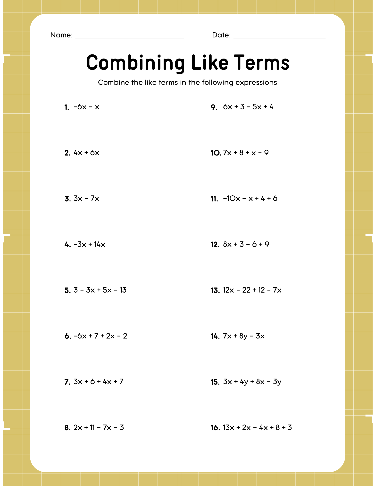

Grace Dittman
Student Teaching Portfolio
Block 2 Math
Block 3 Math
ESS
General Information
Lesson Plans
Student Teaching Journal
Résumé
Search
Home
›
Block 3 Math
›
Week 7
›
Actvities
›
Combining Like Terms Practice
Combining Like Terms Practice
Combining Like Terms.png
← Combining Like Terms Maze
Also in:
Block 3 Math/Week 6/Activities
Open full size

Goes with
Combining Like Terms Practice (Answer Key)
Combining Like Terms Key.png
Lesson plans from the same week
Like Terms: UNO & Practice
10/09, 10/13
Combining Like Terms: Maze & Review
10/14, 10/15
Quiz & Intro to the Distributive Property
10/16, 10/19
← Combining Like Terms Maze